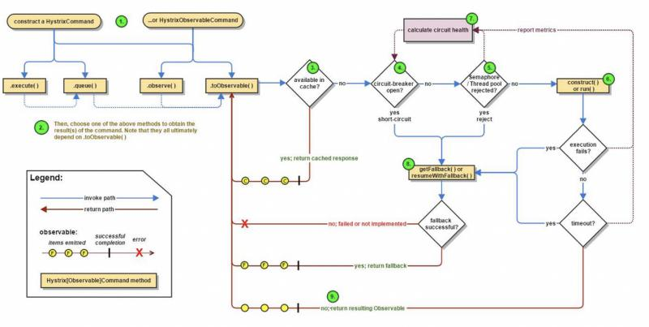

引入依赖
<dependency>
<groupId>com.netflix.hystrix</groupId>
<artifactId>hystrix-core</artifactId>
<version>1.5.12</version>
</dependency>创建Command类
public class HelloCommand extends HystrixCommand<String> {
public HelloCommand() {
super(HystrixCommandGroupKey.Factory.asKey("test"));
}
@Override
protected String run() throws Exception {
Thread.sleep(800);
return "sucess";
}
@Override
protected String getFallback() {
System.out.println("执行了回退方法");
return "error";
}
}创建测试类
public class CommandTest {
public static void main(String[] args) {
HelloCommand command = new HelloCommand();
String result = command.execute();
System.out.println(result);
}
}

首先我们看一下上方的这张图，这个图完整的描述了Hystrix的工作流程：
1.每次调用都会创建一个HystrixCommand
2.执行execute或queue做同步\异步调用
3.判断熔断器是否打开,如果打开跳到步骤8，否则进入步骤4
4.判断线程池/信号量是否跑满，如果跑满进入步骤8,否则进入步骤5
5.调用HystrixCommand的run方法，如果调用超时进入步骤8
6.判断是否调用成功，返回成功调用结果，如果失败进入步骤8
7.计算熔断器状态,所有的运行状态(成功, 失败, 拒绝,超时)上报给熔断器，用于统计从而判断熔断器状态
8.降级处理逻辑，根据上方的步骤可以得出以下四种情况会进入降级处理：
9.返回执行成功结果
HystrixCommand接着我们结合源码看一下这个调用流程，直接执行测试类的main方法，可以看到入口就在execute方法上
public R execute() {
try {
return queue().get();
} catch (Exception e) {
throw Exceptions.sneakyThrow(decomposeException(e));
}
}public Future<R> queue() {
final Future<R> delegate = toObservable().toBlocking().toFuture();
//省略。。。
};接着看toObservable()方法
public Observable<R> toObservable() {
//省略。。。
return Observable.defer(new Func0<Observable<R>>() {
@Override
public Observable<R> call() {
if (!commandState.compareAndSet(CommandState.NOT_STARTED, CommandState.OBSERVABLE_CHAIN_CREATED)) {
IllegalStateException ex = new IllegalStateException("This instance can only be executed once. Please instantiate a new instance.");
//TODO make a new error type for this
throw new HystrixRuntimeException(FailureType.BAD_REQUEST_EXCEPTION, _cmd.getClass(), getLogMessagePrefix() + " command executed multiple times - this is not permitted.", ex, null);
}
commandStartTimestamp = System.currentTimeMillis();
if (properties.requestLogEnabled().get()) {
// log this command execution regardless of what happened
if (currentRequestLog != null) {
currentRequestLog.addExecutedCommand(_cmd);
}
}
final boolean requestCacheEnabled = isRequestCachingEnabled();
final String cacheKey = getCacheKey();
//如果开启请求缓存则查询缓存是否存在
if (requestCacheEnabled) {
HystrixCommandResponseFromCache<R> fromCache = (HystrixCommandResponseFromCache<R>) requestCache.get(cacheKey);
if (fromCache != null) {
isResponseFromCache = true;
return handleRequestCacheHitAndEmitValues(fromCache, _cmd);
}
}
Observable<R> hystrixObservable =
Observable.defer(applyHystrixSemantics)
.map(wrapWithAllOnNextHooks);
Observable<R> afterCache;
if (requestCacheEnabled && cacheKey != null) {
HystrixCachedObservable<R> toCache = HystrixCachedObservable.from(hystrixObservable, _cmd);
HystrixCommandResponseFromCache<R> fromCache = (HystrixCommandResponseFromCache<R>) requestCache.putIfAbsent(cacheKey, toCache);
if (fromCache != null) {
// another thread beat us so we'll use the cached value instead
toCache.unsubscribe();
isResponseFromCache = true;
return handleRequestCacheHitAndEmitValues(fromCache, _cmd);
} else {
// we just created an ObservableCommand so we cast and return it
afterCache = toCache.toObservable();
}
} else {
afterCache = hystrixObservable;
}
return afterCache
.doOnTerminate(terminateCommandCleanup) // perform cleanup once (either on normal terminal state (this line), or unsubscribe (next line))
.doOnUnsubscribe(unsubscribeCommandCleanup) // perform cleanup once
.doOnCompleted(fireOnCompletedHook);
}
});
}在上面这个方法中会有一个缓存的判断，如果存在缓存的话直接返回结果，否则进入方法applyHystrixSemantics方法
private Observable<R> applyHystrixSemantics(final AbstractCommand<R> _cmd) {
executionHook.onStart(_cmd);
/* determine if we're allowed to execute */
//判断是否开启熔断器
if (circuitBreaker.attemptExecution()) {
//获取信号量实例
final TryableSemaphore executionSemaphore = getExecutionSemaphore();
final AtomicBoolean semaphoreHasBeenReleased = new AtomicBoolean(false);
final Action0 singleSemaphoreRelease = new Action0() {
@Override
public void call() {
if (semaphoreHasBeenReleased.compareAndSet(false, true)) {
executionSemaphore.release();
}
}
};
final Action1<Throwable> markExceptionThrown = new Action1<Throwable>() {
@Override
public void call(Throwable t) {
eventNotifier.markEvent(HystrixEventType.EXCEPTION_THROWN, commandKey);
}
};
//尝试获取信号量
if (executionSemaphore.tryAcquire()) {
try {
/* used to track userThreadExecutionTime */
executionResult = executionResult.setInvocationStartTime(System.currentTimeMillis());
return executeCommandAndObserve(_cmd)
.doOnError(markExceptionThrown)
.doOnTerminate(singleSemaphoreRelease)
.doOnUnsubscribe(singleSemaphoreRelease);
} catch (RuntimeException e) {
return Observable.error(e);
}
} else {
//拒绝
return handleSemaphoreRejectionViaFallback();
}
} else {
//失败
return handleShortCircuitViaFallback();
}
}在applyHystrixSemantics方法中，首先会判断是否开启熔断器，如果开启则直接进入失败处理的逻辑。否则会尝试获取信号量（如果使用的是线程池的模式则默认获取成功），获取成功进入executeCommandAndObserve方法
private Observable<R> executeCommandAndObserve(final AbstractCommand<R> _cmd) {
final HystrixRequestContext currentRequestContext = HystrixRequestContext.getContextForCurrentThread();
//省略...
//判断是否开启超时设置
if (properties.executionTimeoutEnabled().get()) {
//list添加超时操作
execution = executeCommandWithSpecifiedIsolation(_cmd)
.lift(new HystrixObservableTimeoutOperator<R>(_cmd));
} else {
execution = executeCommandWithSpecifiedIsolation(_cmd);
}这里如果设置超时时间的话则会加上一个超时的处理，接着看executeCommandWithSpecifiedIsolation方法
private Observable<R> executeCommandWithSpecifiedIsolation(final AbstractCommand<R> _cmd) {
if (properties.executionIsolationStrategy().get() == ExecutionIsolationStrategy.THREAD) {
return Observable.defer(new Func0<Observable<R>>() {
@Override
public Observable<R> call() {
executionResult = executionResult.setExecutionOccurred();
if (!commandState.compareAndSet(CommandState.OBSERVABLE_CHAIN_CREATED, CommandState.USER_CODE_EXECUTED)) {
return Observable.error(new IllegalStateException("execution attempted while in state : " + commandState.get().name()));
}
metrics.markCommandStart(commandKey, threadPoolKey, ExecutionIsolationStrategy.THREAD);
if (isCommandTimedOut.get() == TimedOutStatus.TIMED_OUT) {
return Observable.error(new RuntimeException("timed out before executing run()"));
}
if (threadState.compareAndSet(ThreadState.NOT_USING_THREAD, ThreadState.STARTED)) {
HystrixCounters.incrementGlobalConcurrentThreads();
threadPool.markThreadExecution();
// store the command that is being run
endCurrentThreadExecutingCommand = Hystrix.startCurrentThreadExecutingCommand(getCommandKey());
executionResult = executionResult.setExecutedInThread();
try {
executionHook.onThreadStart(_cmd);
executionHook.onRunStart(_cmd);
executionHook.onExecutionStart(_cmd);
return getUserExecutionObservable(_cmd);
} catch (Throwable ex) {
return Observable.error(ex);
}
} else {
return Observable.empty();
}
}
}).doOnTerminate(new Action0() {
@Override
public void call() {
if (threadState.compareAndSet(ThreadState.STARTED, ThreadState.TERMINAL)) {
handleThreadEnd(_cmd);
}
if (threadState.compareAndSet(ThreadState.NOT_USING_THREAD, ThreadState.TERMINAL)) {
}
}
}).doOnUnsubscribe(new Action0() {
@Override
public void call() {
if (threadState.compareAndSet(ThreadState.STARTED, ThreadState.UNSUBSCRIBED)) {
handleThreadEnd(_cmd);
}
if (threadState.compareAndSet(ThreadState.NOT_USING_THREAD, ThreadState.UNSUBSCRIBED)) {
}
}
}).subscribeOn(threadPool.getScheduler(new Func0<Boolean>() {
@Override
public Boolean call() {
return properties.executionIsolationThreadInterruptOnTimeout().get() && _cmd.isCommandTimedOut.get() == TimedOutStatus.TIMED_OUT;
}
}));
} else {
return Observable.defer(new Func0<Observable<R>>() {
@Override
public Observable<R> call() {
executionResult = executionResult.setExecutionOccurred();
if (!commandState.compareAndSet(CommandState.OBSERVABLE_CHAIN_CREATED, CommandState.USER_CODE_EXECUTED)) {
return Observable.error(new IllegalStateException("execution attempted while in state : " + commandState.get().name()));
}
metrics.markCommandStart(commandKey, threadPoolKey, ExecutionIsolationStrategy.SEMAPHORE);
// semaphore isolated
// store the command that is being run
endCurrentThreadExecutingCommand = Hystrix.startCurrentThreadExecutingCommand(getCommandKey());
try {
executionHook.onRunStart(_cmd);
executionHook.onExecutionStart(_cmd);
return getUserExecutionObservable(_cmd); //the getUserExecutionObservable method already wraps sync exceptions, so this shouldn't throw
} catch (Throwable ex) {
//If the above hooks throw, then use that as the result of the run method
return Observable.error(ex);
}
}
});
}
}这段代码比较长，具体的执行逻辑为：